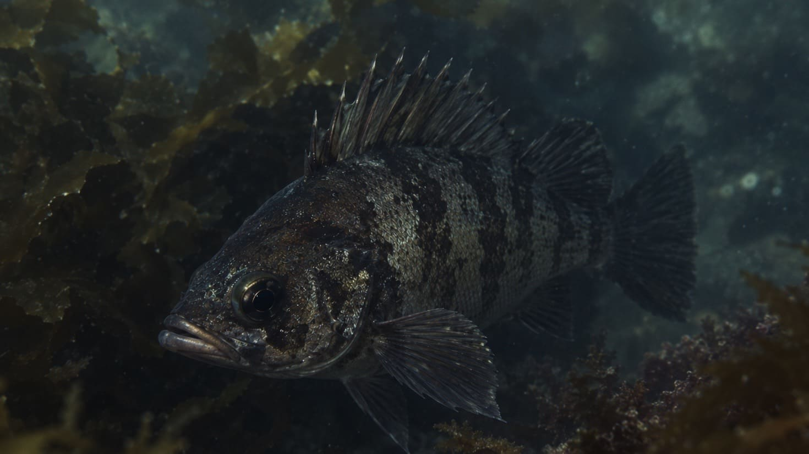
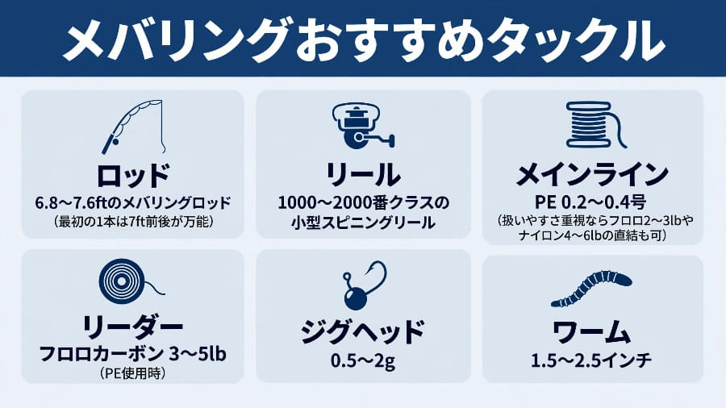
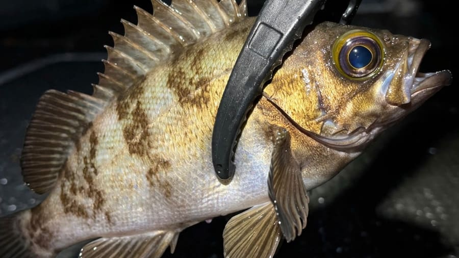

春を告げる好敵手・メバル完全攻略ガイド：生態から見極めるポイント選び、釣り方、未来へつなぐリリース基準

冬の冷たい風が吹き始める晩秋から春先にかけて、岸釣りの主役として絶大な人気を誇るのがメバルです。早春に最盛期を迎えることから古くより「春告魚（はるつげうお）」と親しまれ、身近な堤防や漁港、小磯などから手軽に狙えるうえ、食べて美味しい点も多くの釣り人を惹きつけてやみません。もっとも、メバルは「根魚」の仲間でありながら、カサゴのようにただ海底に張り付いているだけの魚ではありません。岩陰や海藻のそばに身を寄せつつも、状況に応じて中層から水面直下まで軽やかに浮上し、頭を上に向けて獲物を待ち構える独特の習性を持っています。それゆえに、「どんな環境に棲むのか」「いつ・どの水深でエサを追うのか」という生態の理解がそのまま釣果の差となって表れます。
また、メバルは成長が緩やかで、同じ場所に群れで定着しやすい魚でもあります。これからも豊かなフィールドでメバル釣りを楽しむために、本記事では種類の見分け方から繁殖生態、実績の高いポイント選び、ルアー・エサ双方の攻略法、そして資源を守るためのリリース基準と安全対策までを実践的な視点で解説します。
1. 岸から出会えるメバルは3種類｜体色と胸ビレで見分ける棲み分け
私たちが普段ひとまとめに「メバル」と呼んでいる岸釣りのターゲットは、かつて同一種とみなされていましたが、近年の分類学的な再検討によって「アカメバル」「クロメバル」「シロメバル」の3種類に整理されました。それぞれ好む環境が異なるため、違いを知っておくとポイント選びのヒントになります。
| 種類 | 体色の傾向 | 好む環境・ポイント | 胸ビレ軟条数 |
|---|---|---|---|
| アカメバル | 赤褐色〜オレンジ系 | アマモ場やガラモ場などの藻場、内湾の浅い岩礁帯 | 15本 |
| クロメバル | 黒っぽく青緑を帯びる（胸ビレも暗色） | 外洋に面した潮通しの良い岩礁帯・磯 | 16本 |
| シロメバル | 淡い褐色〜灰色系で全体的に薄め | 内湾や港湾部、身近な堤防周り | 17本 |
メバルの体色は生息場所の明るさや海藻の色、個体差によって変化しやすいため、見た目だけで厳密に見分けるのは簡単ではありません。現場では大まかな体色や胸ビレの色合いを目安にしつつ、正確に判別したいときは胸ビレの骨の筋（軟条数）を数える方法が確実です。なお、沖合の深場に棲み船釣りで知られる「ウスメバル」や、北海道周辺で「ガヤ」と呼ばれる「エゾメバル」は、一般的な堤防や磯で狙う上記3種とは区別して考えると整理しやすくなります。
名前の由来にもなった「大きな目」と捕食スタイル
カサゴと似た体つきをしながらも、ひときわ大きく張り出した目を持つことが「メバル（目張る）」という和名の由来です。暗がりでも獲物を見極める優れた視力を持ち、主に夜間を中心に甲殻類（エビ・アミ類）、イソメなどの多毛類、小魚を積極的に捕食します。岩や海藻のそばで頭をやや上向きにしてホバリングするように漂い、自分の視界の上を通過するエサや、落ちてくる・逃げていく対象に対して鋭敏に反応する点が大きな特徴です。
2. 「卵」ではなく「子ども」を産む？ メバルの特殊な繁殖と遅い成長
メバル釣りを長く楽しむうえで知っておきたいのが、繁殖の仕組みと成長スピードです。一般的な海水魚は海中に卵を産み落としますが、メバルは「卵胎生（らんたいせい）」と呼ばれる特殊な繁殖形態をとります。
- 秋から初冬にかけてオスとメスが交尾する。
- オスから受け取った精子によって、メスの体内で受精が行われる。
- 卵はメスの体内で発生し、そのまま孵化する。
- 孵化した4〜5mmほどの仔魚（しぎょ）を、ある程度育ててから冬〜春に海中へ産み出す。
- 海へ放たれた仔魚は浮遊生活を送り、成長に伴い流れ藻などに寄り添いながら育つ。
つまりメバルは卵ではなく「すでに泳げる状態の小さな魚」を産み出します。1尾が産む仔魚は数千〜数万尾にのぼり、水産庁の調査資料には1個体あたりの胎内仔魚数が平均約28,100尾というデータも報告されています（個体差・海域差あり）。
地域ごとの産仔期（出産シーズン）の目安
| 地域 | 産仔時期の目安 |
|---|---|
| 西日本 | 12月〜1月 |
| 中部地方 | 12月〜2月 |
| 東北地方 | 12月〜3月 |
| 関東地方 | 2月〜4月 |
※海水温や年ごとの海況により変動します。交尾自体はこれらより前の秋〜初冬に行われます。
20cmに育つまで約3年｜成長の遅さが意味するもの
メバルは成長が緩やかな魚です。福島県水産試験場の調査では「2歳で約16cm」「3歳で約20cm」「4歳で約22cm」という成長目安が確認されており、魚種資料によっては5歳前後でも全長20cmほどと紹介されることがあります。繁殖可能（成熟）になるのは概ね2〜3歳ごろとされているため、サイズ帯の目安は次のようになります。
- 10cm未満：生まれたてに近い小型の幼魚
- 10〜15cm：多くがまだ未成熟の段階
- 15〜18cm：成熟し始める個体が現れ始めるサイズ帯
- 18〜20cm：成熟個体の割合が増えてくる境界ライン
- 20〜25cm：成熟した成魚が中心
- 25cm以上：長い年月を生き抜いた大型の成魚
※全長だけで成熟の有無を断定することはできませんが、堤防でよく釣れる15cm前後の多くがまだ繁殖前の若魚である点は意識しておきたいポイントです。
3. 狙うべき時期・時間帯・潮回り｜昼と夜で変わる行動パターン
メバル自体は一年を通じて沿岸にいますが、岸から安定して狙えるベストシーズンは晩秋から春にかけてです。
- 秋（9〜11月）：水温低下とともに徐々に活性が上向き、冬に向けて浅場で狙いやすくなる。
- 冬（12〜2月）：シーズンの好期。良型も期待できる一方、寒波や産仔前後は食いが渋る日もある。
- 春（3〜5月）：浅場での釣りが盛り上がり、小魚を活発に追う個体も増える。
- 夏（6〜8月）：高水温を避けて深場や涼しい場所へ移動する傾向が強まる。
昼と夜の行動差と狙い目の時合い
日中は岩陰や海藻の奥、海底付近の低いレンジに身を潜めていることが多く、障害物の際や影をタイトに狙う必要があります。一方、夕マズメから夜間になると行動範囲が広がり、中層から表層まで浮上してプランクトンや小魚を活発に捕食し始めます。
狙い目の時間帯は「日没直後〜2・3時間」「潮がしっかり動いている夜間」「夜明け前の朝マズメ」の順で有望です。なお、目が良い魚ゆえに日中は見切られやすいものの、曇天や適度な濁りが入った穏やかな凪の日であれば昼間でもチャンスがあります。潮回りは大潮にこだわる必要はなく、「潮が動き始めた瞬間」「潮が効いている時間帯」「緩み始める変わり目」といった流れの変化を意識すると時合いを掴みやすくなります。
4. 釣果を分ける5つの一級ポイント｜生態から逆算する場所選び
メバルは群れで特定の場所に着く性質が強いため、「身を隠せるストラクチャー」と「エサが集まる条件」が重なるスポットを絞り込むのが近道です。
- ① 常夜灯が作る「明暗の境目」：光に集まった小魚やプランクトンを、暗い側に潜んだメバルが狙っています。明暗の境目を横切るように通すのがセオリーです。
- ② テトラポッド・消波ブロック帯：隙間や切れ目、沈みテトラ周辺、テトラと海底の境目は一級の隠れ家。夜間は少し離れた場所まで出てくることもあるため、危険を冒して夜間にテトラ上へ乗らず安全な足場から狙いましょう。
- ③ 藻場・海藻の周辺：小型の甲殻類や小魚が集まる代表的なエサ場。海藻の頭のすぐ上をかすめるように少し浮かせて引くのが基本です。
- ④ 潮通しの良い堤防の先端・曲がり角：潮流がぶつかりヨレや潮目ができる場所はベイトが運ばれやすく、活性の高い群れが回りやすいポイントです。
- ⑤ 沈み根・カケアガリ・地形変化：砂地と岩礁の境目や急に深くなるカケアガリ、海藻の切れ目は日中や良型狙いの鍵を握ります。
関東エリア（東京湾内房の木更津・袖ヶ浦周辺、三浦半島や横浜の岸壁・防波堤、外房・南房総の小磯や漁港など）を含め、初めて訪れる釣り場でメバルの気配を探る際は、「藻場」「岩礁・障害物」「潮通し」の3条件に常夜灯や水深の有無を組み合わせてチェックすると一級スポットを絞り込みやすくなります。
5. メバリング（ルアー釣り）の基本タックルと実践アクション
軽量のジグヘッドとワームで狙うメバリングは、軽快な装備で繊細なアタリと引き味を堪能できる人気の釣法です。専用タックルが理想ですが、アジングロッドやウルトラライト系のトラウト・バスロッドからの流用でも始められます。

| 道具 | おすすめのスペック |
|---|---|
| ロッド | 6.8〜7.6ft（最初の1本は7ft前後が扱いやすい） |
| リール | 1000〜2000番クラスの小型スピニングリール |
| メインライン | PE 0.2〜0.4号（フロロ2〜3lbやナイロン4〜6lb直結も可） |
| リーダー | フロロカーボン 3〜5lb（PE使用時） |
| ジグヘッド | 0.5〜2g |
| ワーム | 1.5〜2.5インチ |
ジグヘッドの重さとワーム・プラグの選び方
ジグヘッドは「軽ければ釣れる」わけではなく、風や潮の中で狙った水深をキープできる重さを選ぶことが重要です。まずは0.8〜1.0gを基準に、浅場・無風時は0.4〜0.6g、やや深場や軽い流れには1.2〜1.5g、深場や強風・速潮時は2g前後へと調整しましょう。
ワームは自然な波動の「ストレート系」を軸に、小魚を意識した「シャッド・ピンテール系」やアピール力の高い「カーリーテール系」を用意します。カラーは常夜灯周りや澄み潮ならクリア・クリアラメ、濁り潮はホワイトやチャート、暗い場所ではグロー系が定番です。また、水面近くで小魚を追っている状況では3〜7cmの小型ミノーやポッパーも威力を発揮します。
基本は「上から探るスローなただ巻き」
メバリングの操作はシンプルです。キャストしたら着水後3秒・5秒・8秒と沈める時間を変えながら、「表層 → 中層 → 底付近」の順にレンジを刻み、ロッドを動かさずゆっくり一定速度で巻いてきます。速巻きしすぎは失敗のもとになるため、想像以上にスローに引くのがコツです。
- リフト＆フォール：ただ巻きに反応しないとき、ロッドを持ち上げてから落とす動き（カーブフォールやフリーフォール）で「落ちてくるエサ」に反応させます。
- ストップ＆ゴー：巻いている途中で一瞬止めて食わせの間を作ります。
- フロートリグ：遠浅のゴロタ浜や沖の沈み根など、ジグヘッド単体では届かない浅いレンジを遠投して自然に漂わせたい場面で重宝します。
1匹釣れたら群れがいる可能性が高いため、同じ方向・同じ水深・同じ巻き速度をすぐ再現しましょう。潮上に投げて流れに乗せるドリフトや、強風時のウエイトアップ・風裏への移動も釣果を伸ばす実践テクニックです。
6. 初心者でも手堅く釣れる！ 王道のエサ釣りバリエーション
ルアーだけでなく、生エサで狙うメバル釣りも根強い実績があります。状況によってはエサ釣りのほうが圧倒的に反応を得やすいことも珍しくありません。
- 電気ウキ釣り：夜の堤防の定番。1.5〜2号の磯竿・万能竿に2500番リール、道糸ナイロン2〜3号、小型電気ウキ、ハリス0.8〜1.5号、メバル針や小型グレ針を使用。アオイソメやモエビ、シラサエビを付け、ウキ下1〜2mから探ります。
- 長竿（渓流竿・メバル竿）のミャク・探り釣り：4.5〜5m前後の竿に道糸1.5号、ハリス0.8号、ガン玉B〜3B、メバル針6〜10号のシンプル仕掛けで際や根周りを自然に落とし込みます。ハリの20〜30cm上に小型の化学発光体を付けると、目印兼集魚効果を発揮することがあります。
- リール竿のチョイ投げ釣り：高い堤防や少し沖の沈み根を広く探る釣法。小型片テンビンとナス型オモリ3〜6号、ハリス1号・丸セイゴやヤマメ針8〜10号でアオイソメやジャリメをゆっくり引きながら誘います。
- エビ撒き釣り：藻場や岩礁の潮上からブツエビ等を少量ずつ継続して撒き、メバルを浮かせてタナを合わせる実績の高いスタイルです。
エサ釣りで覚えておきたい小ワザが2つあります。ひとつは、モエビなどの生きエサで誘っていてアタリがあるのにハリ掛かりしないときは、あえてアワセを入れずそのままゆっくり引き続けること。もうひとつは、掛けた魚を水中で暴れさせて群れを散らさないよう、竿の弾力を活かして一気に浮かせて抜き上げることです。
7. 未来のメバルを守るリリース基準とダメージを抑える扱い方

成長が遅く、同じ場所に群れで定着しやすいメバルは、小型個体を持ち帰り続けると釣り場の資源が目に見えて減ってしまいます。全国一律の法定サイズ制限があるわけではありませんが、資源保護のための自主基準として「20cm未満は基本リリース」をおすすめします。
| サイズの目安 | 推奨される扱い |
|---|---|
| 15cm未満 | 原則リリース（未成熟の幼魚・若魚が大半） |
| 15〜19cm | リリース推奨（成熟途上のサイズ帯） |
| 20〜22cm | 持ち帰りを慎重に判断 |
| 23〜24cm | 食べる分だけキープ |
| 25cm以上 | 良型。必要な分だけキープ |
| 30cm以上 | 尺メバル。貴重な大型親魚 |
25cm以上や30cmを超える尺メバルは、長い年月を生き抜き次世代を多く残せる貴重な繁殖個体でもあります。食べるために必要な分だけを持ち帰り、それ以外は海へ返す姿勢が豊かな釣り場を守ります。なお、都道府県の漁業調整規則や漁場ごとの自主ルールが設定されている場合もあるため、釣行先の規則は必ず確認してください。
魚を弱らせないリリースのコツ
- 魚体を手で強く握らず、フィッシュグリップ等を使って触れる時間を最小限にする。
- 乾いた地面やコンクリートに長時間置かない。
- 浅く掛かったハリは素早く外し、できる限り優しく水中へ戻す。
- ハリを奥まで深く飲み込まれた場合は無理に引き抜かず（エラや内臓を傷つけるため）、ハリスを口元で切って逃がす判断も大切。
8. ナイトゲームを楽しむための安全対策と要点まとめ
メバル釣りは夜釣りが中心になるため、装備と安全意識の徹底が欠かせません。
| 必須装備 | 用意する理由 |
|---|---|
| ライフジャケット | 万が一の転落時に生存率を大きく高める |
| ヘッドライト＆予備ライト | 両手を空けて安全に作業でき、電池切れにも備えられる |
| 滑りにくい靴 | 濡れた堤防や海藻上での転倒防止 |
| 携帯電話（防水対策） | 緊急時の連絡手段（海の事故・救助要請は118番） |
| フィッシュグリップ | 鋭いヒレや棘から手を守り、魚を安全に扱う |
夜間のテトラ帯や地磯への単独釣行は避け、立入禁止区域には絶対に入らないでください。最後に、メバル攻略の要点を一覧にまとめます。
| 項目 | 要点・目安 |
|---|---|
| 主な対象魚 | アカメバル・クロメバル・シロメバル |
| ベストシーズン | 晩秋〜春（11月〜5月頃） |
| おすすめ時間帯 | 日没後〜夜間、朝マズメ前（曇天・濁り時は日中も可） |
| 主なポイント | 常夜灯の明暗部、藻場、テトラ周辺、堤防先端、沈み根 |
| 基本リグ | ワーム1.5〜2.5インチ ＋ ジグヘッド0.8〜1.5g基準 |
| 繁殖・成熟目安 | 卵胎生（仔魚を産む）／成熟は概ね2〜3歳（15〜20cm帯） |
| 推奨リリース基準 | 20cm未満は基本リリース |
静かな夜の海で生態と地形を読み解き、「コツン」と伝わる繊細なアタリを捉える楽しさは、冬から春ならではの格別な魅力です。安全装備と資源保護への配慮を忘れずに、今シーズンのメバル釣りを楽しんでください。
参考資料：水産庁（遊漁と海面利用の基本的ルールおよび水産資源調査資料）、福島県水産試験場（福島県海域におけるメバルの生態および漁業実態の解明）、国土交通省（カサゴ、アイナメ、メバルの生活史と生態知見）、Honda釣り倶楽部（メバルの特徴）
📍 関東のメバル生息・釣果スポット
※マップ上の赤いドットが釣れるポイントです。